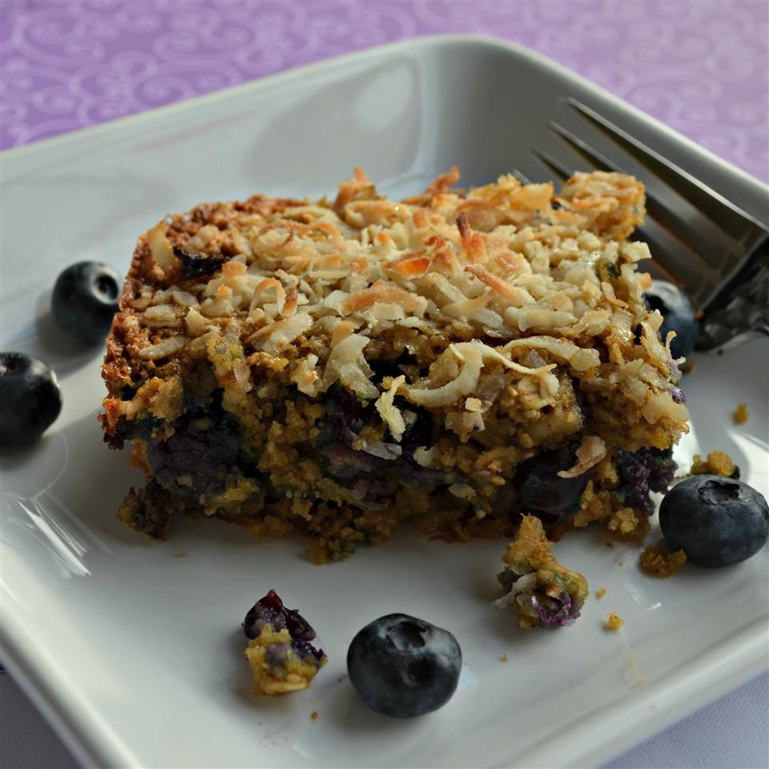

Blueberry Oatmeal Breakfast Bars

Description
These breakfast bars are quick and easy to make. They freeze well and can be made with many combinations of fruits and nuts. Make these and freeze them for a quick breakfast on the go.
It will take 15 minutes to prepare, 35 minutes to cook, an additional 10 minutes after cooking, contains 8 servings, and will yield 16 bars in total. Each serving will contain 324 calories, 8.1g of protein, 41.4g of carbohydrates, 15.5g of fat, 61.8mg of cholesterol, and 305.4mg of sodium.
Ingredients
- 1 cup whole oats
- 1 cup oat flour
- ½ cup brown sugar
- ½ teaspoon salt
- ½ teaspoon baking soda
- ½ cup almond milk
- 2 eggs
- ¼ cup melted butter
- 1 teaspoon vanilla extract
- 1 cup fresh blueberries
- ½ cup chopped walnuts
- ⅓ cup shredded coconut (Optional)
Steps
- Preheat oven to 350 degrees F (175 degrees C). Grease an 8-inch square pan.
- Combine whole oats, oat flour, brown sugar, salt, and baking soda together in a bowl. Stir in almond milk, eggs, butter, and vanilla extract until well combined. Fold in blueberries and walnuts. Spread mixture into prepared square pan; top with shredded coconut.
- Bake in the preheated oven until edges are golden and coconut is brown; about 35 minutes. Cool in the pan for 10 minutes before cutting into squares.